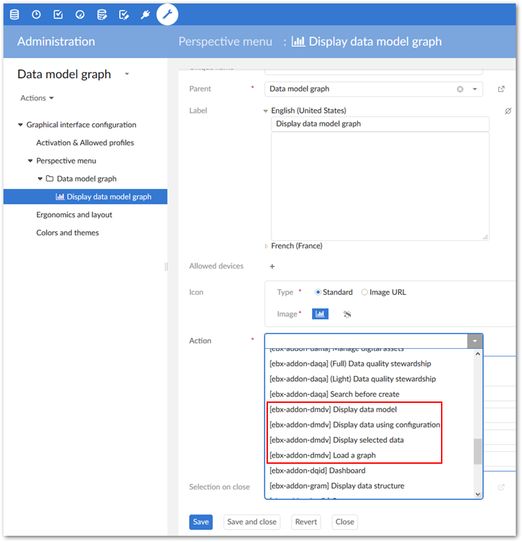
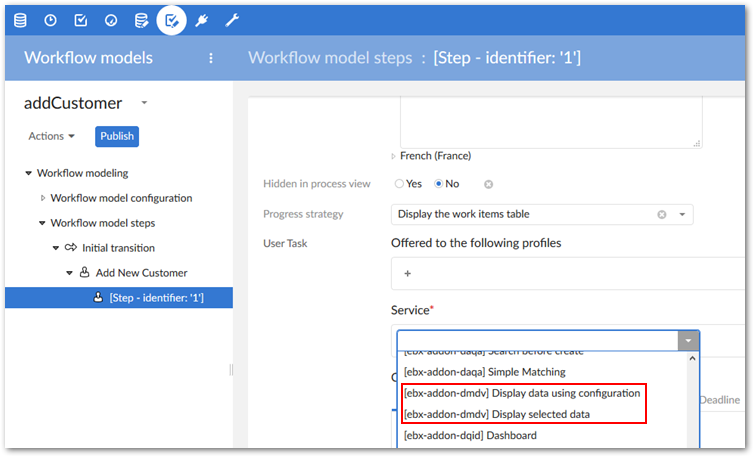

Administrators can configure EBX® perspectives and workflows to display data model and data value graphs. See the EBX® product documentation for more information on creating perspectives and workflows.
When creating or editing a perspective, you can use the Action menu to access the following add-on functionality:
Display data model: displays the data model specified in the Input parameters group. The graph uses any existing configuration settings for display. If no settings exist, the default add-on settings apply.
Display data using configuration: displays a configured data value graph. Use the service's Input parameters group to enter the dataspace, dataset, and records to display in the graph. The Expand by default parameter determines whether the add-on automatically expands the graph's nodes on open. To enable automatic expansion, enter a value of true. Leave the field empty or enter false to disable the feature.
Using the Graph configuration parameter, you can specify which graph configuration the add-on uses to generate the graph. If you leave the parameter blank:
And the selected records are only included in one graph configuration, the add-on automatically uses that configuration.
And multiple configurations are linked to the selected records, the add-on will allow the user to choose the configuration to use.
Display selected data: displays a data value graph. Use the service's Input parameters group to enter the dataspace, dataset, and records to display in the graph.
Load a graph: allows the user to choose a saved graph to load.

When creating or editing a workflow step you can apply the following add-on services:
Display data using configuration: displays a configured data value graph. Use the service's Input parameters group to enter the dataspace, dataset, and records to display in the graph. Using the Graph configuration parameter, you can specify which graph configuration the add-on uses to generate the graph. If you leave the parameter blank:
And the selected records are only included in one graph configuration, the add-on automatically uses that configuration.
And multiple configurations are linked to the selected records, the add-on will allow the user to choose the configuration to use.
Display selected data: displays a data value graph. Use the service's Input parameters group to enter the dataspace, dataset, and records to display in the graph.
